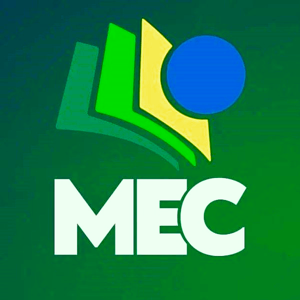

Inicio📍
Que esta quarta-feira à noite seja um momento de equilíbrio e tranquilidade. Aproveite para relaxar, cuidar de si e renovar as energias para o restante da semana. 🌟

Desacelere hoje para seguir em frente com mais força amanhã...
Ciência🛸
Nasa descobre objeto 27 mil vezes maior que a Terra e monitora movimentação
A NASA fez uma descoberta astronômica que está capturando a atenção do mundo: um objeto colossal, 27 mil vezes maior que a Terra, está se movendo através da Via Láctea a uma velocidade surpreendente de mais de 1,6 milhão de quilômetros por hora. Este objeto, identificado pelo projeto Planet 9, apresenta características que desafiam o entendimento atual dos astrônomos sobre os corpos celestes em nossa galáxia.
O objeto, conhecido como CWISE, foi detectado em uma trajetória que sugere a possibilidade de escapar da gravidade da galáxia e entrar no espaço intergaláctico. A natureza e a origem de CWISE são ainda mais intrigantes. Acredita-se que ele possa ter se originado de um sistema binário onde uma anã branca explodiu em uma supernova, ou talvez tenha sido lançado em sua jornada após interagir com um par de buracos negros em um aglomerado estelar.
A análise do Observatório W. M. Keck revelou que CWISE possui uma composição química com menos ferro e outros metais em comparação com outras estrelas, indicando que pode ser um dos remanescentes das primeiras gerações de estrelas formadas na Via Láctea. Esta baixa concentração de metais reforça a hipótese de que estamos diante de um objeto extremamente antigo, oferecendo uma janela única para o passado do universo.
A descoberta de CWISE é um testemunho do poder da ciência cidadã, pois foi possível graças à colaboração entre cientistas, estudantes e voluntários. Este achado não apenas desafia nosso conhecimento atual, mas também abre novas oportunidades para estudar os fenômenos que ocorrem nas fronteiras de nossa galáxia e além.
Enquanto a NASA continua a monitorar CWISE, a comunidade científica aguarda ansiosamente por mais dados que possam esclarecer a origem e o destino final deste enigmático viajante interestelar.
Política🗳
Alterações nas Regras de Férias para Trabalhadores CLT: Um Resumo das Novas Normativas
As regras de férias para trabalhadores regidos pela Consolidação das Leis do Trabalho (CLT) no Brasil sofreram alterações significativas, impactando diretamente o direito ao descanso remunerado. Segundo as novas normativas, o período de férias a que um empregado tem direito agora varia de acordo com o número de faltas injustificadas que ele teve ao longo do ano.
De acordo com o novo regimento, se o empregado faltar até cinco vezes no período de 12 meses, mantém-se o direito aos 30 dias de férias. No entanto, se o número de faltas for de seis a 14, o período de férias reduz para 24 dias. Caso as faltas sejam de 15 a 23 dias, o trabalhador terá direito a apenas 18 dias de férias remuneradas. E, em uma situação onde o trabalhador tenha de 24 a 32 faltas, o período de descanso remunerado cai para 12 dias.
Outra mudança relevante é a possibilidade de fracionamento das férias. Desde a Reforma Trabalhista de 2017, os trabalhadores podem dividir as férias de 30 dias em até três períodos, desde que cumpram alguns requisitos. É necessário que haja um acordo com o empregador, que um dos períodos não seja inferior a 14 dias e que os demais períodos não sejam menores que cinco dias cada.
Essas alterações visam proporcionar uma maior flexibilidade tanto para empregadores quanto para empregados, permitindo uma negociação mais aberta sobre o período de descanso. No entanto, é fundamental que ambas as partes estejam bem informadas sobre as novas regras para evitar mal-entendidos e garantir que os direitos dos trabalhadores sejam respeitados.
ara mais informações detalhadas sobre as mudanças nas regras de férias da CLT, clique abaixo Saiba mais
Tecnologia👨💻
Eficiência na agricultura por meio de um sensor
Um avanço significativo na tecnologia de sensores promete revolucionar a agricultura, tornando-a mais eficiente e potencialmente reduzindo os custos dos alimentos para os consumidores. Engenheiros desenvolveram um sensor compacto que utiliza imagens infravermelhas, que pode ser acoplado a drones para monitoramento remoto das lavouras. Esta inovação permite uma gestão de culturas mais precisa, possibilitando irrigação e controle de pragas direcionados, o que pode resultar em preços mais baixos nos supermercados e colheitas mais abundantes.
O sistema de sensoriamento leve, que emprega a tecnologia de óptica plana, é capaz de alternar rapidamente entre a detecção de bordas e a obtenção de imagens infravermelhas detalhadas. Isso elimina a necessidade de processamento de grandes volumes de dados e o uso de processadores externos volumosos. A capacidade de mudar para uma imagem infravermelha detalhada é um desenvolvimento novo no campo e pode permitir que os agricultores coletam mais informações quando o sensor remoto identifica áreas de possíveis infestações de pragas.
O sensor protótipo é composto por um filtro feito com uma fina camada de dióxido de vanádio, um material que pode alternar entre a detecção de bordas e imagens infravermelhas detalhadas. Quando a temperatura do filtro é alterada, o dióxido de vanádio transforma-se de um estado isolante para um metálico, permitindo que a imagem processada mude de um contorno filtrado para uma imagem infravermelha não filtrada.
Este avanço foi possível graças à colaboração de engenheiros da City University of New York (CUNY), da Universidade de Melbourne, da RMIT University e do ARC Centre of Excellence for Transformative Meta-Optical Systems (TMOS). A pesquisa foi publicada na revista Nature Communications e representa um passo significativo para uma agricultura mais sustentável e econômica.
Educação📚
MEC Lança Programa Escola e Comunidade para Fortalecer Vínculos entre Educação e Comunidade
O Ministério da Educação (MEC) anunciou o lançamento do Programa Escola e Comunidade (Proec), uma iniciativa inovadora que visa fortalecer a integração entre escolas, famílias e comunidades locais. O programa é uma resposta às necessidades de uma educação mais inclusiva e participativa, que reconhece a importância do envolvimento comunitário no processo educacional.
O Proec oferece financiamento para projetos de formação que promovam a cidadania, a cultura de paz, a democracia e a melhoria da qualidade da educação pública brasileira. Com um foco especial na educação integral, o programa busca envolver estudantes, profissionais da educação, familiares e membros da comunidade em atividades que transcendam o currículo tradicional e contribuam para o desenvolvimento integral dos alunos.
As escolas elegíveis para participar do Proec foram selecionadas com base em critérios de vulnerabilidade socioeconômica e complexidade de gestão, garantindo que o apoio chegue às instituições que mais necessitam. Mais de 26 mil escolas em todo o Brasil estão aptas a se beneficiar do programa, o que representa uma oportunidade significativa para transformar a realidade educacional em diversas comunidades.
Um dos componentes chave do Proec é a oficina "Prevenção a violências: desafios da comunicação nas relações do cotidiano no ambiente escolar", que visa desnaturalizar as violências e promover uma comunicação mais eficaz e empática dentro do ambiente escolar. Esta oficina reflete o compromisso do MEC com a criação de ambientes de aprendizagem seguros e acolhedores para todos os alunos.
Para participar, secretários estaduais e municipais de educação devem inscrever-se no Sistema Integrado de Monitoramento, Execução e Controle do MEC (Simec), selecionar as escolas contempladas e indicar os responsáveis por acompanhar o programa. Os diretores das escolas selecionadas deverão elaborar um projeto de formação no sistema PDDE Interativo e indicar um conselheiro escolar para auxiliar na execução das ações.
O prazo para inscrição e envio dos projetos de formação se encerra em 29 de setembro, o que coloca uma ênfase na urgência para que as escolas e secretarias de educação mobilizem-se rapidamente para aproveitar essa oportunidade.
O Proec é um passo importante na direção de uma educação que valoriza a diversidade, a inclusão e a colaboração. Ao fomentar a parceria entre a escola, a família e a comunidade, o programa não apenas melhora a qualidade da educação, mas também fortalece o tecido social e promove o bem-estar coletivo. É uma iniciativa que reconhece que a educação é uma responsabilidade compartilhada e que todos têm um papel vital a desempenhar na formação das futuras gerações.
Extra✨
Quarta-feira à noite é o momento ideal para recarregar as energias e se preparar para o restante da semana. Aqui estão algumas sugestões para aproveitar sua noite:
- Avalie seu progresso 📅: Use a noite para revisar suas metas e o que já foi realizado na semana. Ajustar o curso agora pode garantir um final de semana mais tranquilo.
- Dedique-se ao autocuidado 🧖♀️: Tire um tempo para si, seja com um banho relaxante, uma máscara facial ou um momento de meditação. O cuidado com a mente e o corpo é essencial.
- Prepare uma refeição leve e nutritiva 🥗: Opte por um jantar saudável que ajude a recarregar suas energias e a se preparar para o resto da semana.
- Assista a um filme ou leia um livro 📚: Escolha um entretenimento que inspire e relaxe. Esse momento pode ser fundamental para renovar suas energias.
- Desconecte-se e relaxe 📵: Afaste-se das redes sociais e foque em relaxar, permitindo que sua mente e corpo descansem plenamente.